Feedback Form
|
|
Start of Tutorial > Start of Trail > Start of Lesson |
Search
Feedback Form |
The Swing packages include a general purpose layout manager namedBoxLayout.
BoxLayouteither stacks its components on top of each other or places them in a row — your choice. You might think of it as a full-featured version ofFlowLayout. Here is a picture of an application that demonstrates usingBoxLayoutto display a centered column of components:
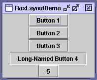 You can run BoxLayoutDemo using JavaTM Web Start. Its code is in
BoxLayoutDemo.java.
By creating one or more lightweight containers that use
BoxLayout, you can achieve some layouts for which the more complexGridBagLayoutis often used.BoxLayoutis also useful in some situations where you might consider usingGridLayoutorBorderLayout. One big difference betweenBoxLayoutand many earlier layout managers is thatBoxLayoutrespects each component's maximum size and X/Y alignment. We'll discuss that later.The following figure shows a GUI that uses two instances of
BoxLayout. In the top part of the GUI, a top-to-bottom box layout places a label above a scroll pane. In the bottom part of the GUI, a left-to-right box layout places two buttons next to each other. ABorderLayoutcombines the two parts of the GUI and ensures that any excess space is given to the scroll pane.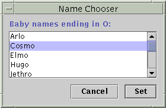 You can find links for running ListDialog and for its source files in the example index[PENDING: add boxes and callouts: Draw a box that includes the buttons (aligned with the buttons' top edges, even with the inside edge of the window-frame on the bottom, and stretching between the inside edges of the window-frame from side to side; in other words, 0 pixels above the buttons, 10 pixels below and to the right of the buttons, and 10 pixels further left than the list). Label this box "left-to-right box layout". Draw a second box that has the same lower borders as the first box and extends up to the window-frame's inner edge. Label this box "top-to-bottom box layout".]
The following code, taken from
ListDialog.javaJDialogsubclass. The bold lines of code set up the box layouts and add components to them.
JScrollPane listScroller = new JScrollPane(list); listScroller.setPreferredSize(new Dimension(250, 80)); listScroller.setAlignmentX(LEFT_ALIGNMENT); ... //Lay out the label and scroll pane from top to bottom. JPanel listPane = new JPanel(); listPane.setLayout(new BoxLayout(listPane, BoxLayout.PAGE_AXIS)); JLabel label = new JLabel(labelText); ... listPane.add(label); listPane.add(Box.createRigidArea(new Dimension(0,5))); listPane.add(listScroller); listPane.setBorder(BorderFactory.createEmptyBorder(10,10,10,10)); //Lay out the buttons from left to right. JPanel buttonPane = new JPanel(); buttonPane.setLayout(new BoxLayout(buttonPane, BoxLayout.LINE_AXIS)); buttonPane.setBorder(BorderFactory.createEmptyBorder(0, 10, 10, 10)); buttonPane.add(Box.createHorizontalGlue()); buttonPane.add(cancelButton); buttonPane.add(Box.createRigidArea(new Dimension(10, 0))); buttonPane.add(setButton); //Put everything together, using the content pane's BorderLayout. Container contentPane = getContentPane(); contentPane.add(listPane, BorderLayout.CENTER); contentPane.add(buttonPane, BorderLayout.PAGE_END);The first bold line creates a top-to-bottom box layout and sets it up as the layout manager for
listPane. The two arguments to theBoxLayoutconstructor are the container that it manages and the axis along with the components will be laid out. The next three bold lines add the label and scroll pane to the container, separating them with a rigid area — an invisible lightweight component used to add space between components. In this case, the rigid area has no width and puts exactly 5 pixels between the label and scroll pane. Rigid areas are discussed later, in Using Invisible Components as Filler.The next chunk of bold code creates a left-to-right box layout and sets it up for the
buttonPanecontainer. Then the code adds two buttons to the container, using a rigid area to put 10 pixels between the buttons. To place the buttons at the right side of their container, the first component added to the container is glue. This glue is an invisible lightweight component that grows as necessary to absorb any extra space in its container. Glue is discussed in Using Invisible Components as Filler.As an alternative to using invisible components, you can sometimes use empty borders to create space around components. For example, the preceding code snippet uses empty borders to put 10 pixels between all sides of the dialog and its contents, and between the two parts of the contents. Borders are completely independent of layout managers. They're simply how Swing components draw their edges. See How to Use Borders
The following sections discuss
BoxLayoutin more detail:Don't let the length of the
- Box layout features
- Using invisible components as filler
- Fixing alignment problems
- Specifying component sizes
- The box layout API
- Examples that use box layouts
BoxLayoutdiscussion scare you! You can probably useBoxLayoutwith the information you already have. If you run into trouble or you want to take advantage ofBoxLayout's power, read on.
As we said before,BoxLayoutarranges components either on top of each other or in a row. As the box layout arranges components, it takes the components' alignments and minimum, preferred, and maximum sizes into account. In this section, we'll talk about top-to-bottom layout. The same concepts apply to left-to-right or right-to-left layout. You simply substitute X for Y, height for width, and so on.
Version note: Before 1.4, no constants existed for specifying the box layout's axis in a localizable way. Instead, you specifiedX_AXIS(left to right) orY_AXIS(top to bottom) when creating theBoxLayout. Our examples now use the constantsLINE_AXISandPAGE_AXIS, which are preferred because they enable programs to adjust to languages that have different orientations. In the default, left-to-right orientation,LINE_AXISspecifies left-to-right layout andPAGE_AXISspecifies top-to-bottom layout.When a
BoxLayoutlays out components from top to bottom, it tries to size each component at the component's preferred height. If the amount of vertical space is not ideal, the box layout tries to adjust each components' height so that the components fill the available amount of space. However, the components might not fit exactly, sinceBoxLayoutrespects each component's requested minimum and maximum heights. Any extra space appears at the bottom of the container.A top-to-bottom box layout tries to make all of its container's components equally wide — as wide as the largest preferred width. If the container is forced to be wider than that, then the box layout tries to make all the components as wide as the container. If the components aren't all the same width (due to restricted maximum size or to any of them having strict left or right alignment), then X alignment comes into play.
The X alignments affect not only the components' positions relative to each other, but also the location of the components (as a group) within their container. The following figures illustrate alignment of components that have restricted maximum widths.
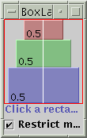
[PENDING: These figures will be updated. The example is now called BoxLayoutDemo2.]In the first figure, all three components have an X alignment of 0.0 (
Component.LEFT_ALIGNMENT). This means that the components' left sides should be aligned. Furthermore, it means that all three components are positioned as far left in their container as possible.In the second figure, all three components have an X alignment of 0.5 (
Component.CENTER_ALIGNMENT). This means that the components' centers should be aligned, and that the components should be positioned in the horizontal center of their container.In the third figure, the components have an X alignment of 1.0 (
Component.RIGHT_ALIGNMENT). You can guess what that means for the components' alignment and position relative to their container.You might be wondering what happens when the components have both restricted maximum sizes and different X alignments. The next figure shows an example of this:
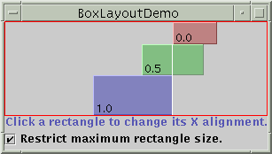 [PENDING: This figure will be updated. The example is now called BoxLayoutDemo2.] As you can see, the left side of the component with an X alignment of 0.0 (
Component.LEFT_ALIGNMENT) is aligned with the center of the component that has the 0.5 X alignment (Component.CENTER_ALIGNMENT), which is aligned with the right side of the component that has an X alignment of 1.0 (Component.RIGHT_ALIGNMENT). Mixed alignments like this are further discussed in Fixing Alignment Problems.What if none of the components has a maximum width? Well, if all the components have identical X alignment, then all components are made as wide as their container. If the X alignments are different, then any component with an X alignment of 0.0 (left) or 1.0 (right) will be smaller. All components with an intermediate X alignment (such as center) will be as wide as their container. Here are two examples:
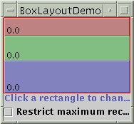 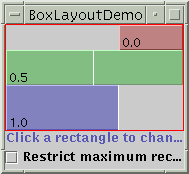
To get to know
[PENDING: These figures will be updated. The example is now called BoxLayoutDemo2.]BoxLayoutbetter, you can run your own experiments with BoxLayoutDemo2.
Try this:
- Run BoxLayoutDemo2 using JavaTM Web Start
You'll see a window like the one above that contains three rectangles. Each rectangle is an instance ofBLDComponent, which is aJComponentsubclass.- Click inside one of the rectangles.
This is how you change the rectangle's X alignment.- Click the check box at the bottom of the window.
This turns off restricted sizing for all the rectangles.- Make the window taller.
This makes the rectangles' container larger than the sum of the rectangles' preferred sizes. The container is aJPanelthat has a red outline, so that you can tell where the container's edges are.
Each component controlled by a box layout butts up against its neighboring components. If you want to have space between components, you can either add an empty border to one or both components, or insert invisible components to provide the space. You can create invisible components with the help of theBoxclass.The
BoxBox.FillerBoxclass provides convenience methods to help you create common kinds of filler. The following table gives details about creating invisible components withBoxandBox.Filler.
Type Size Constraints How to Create rigid area glue horizontal vertical custom Box.Filler(as specified) new Box.Filler(minSize, prefSize, maxSize)Here's how you generally use each type of filler:
- Rigid area
- Use this when you want a fixed-size space between two components. For example, to put 5 pixels between two components in a left-to-right box, you can use this code:
container.add(firstComponent); container.add(Box.createRigidArea(new Dimension(5,0))); container.add(secondComponent);
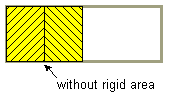 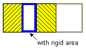
Note: TheBoxclass provides another kind of filler for putting fixed space between components: a vertical or horizontal strut. Unfortunately, struts have unlimited maximum heights or widths (for horizontal and vertical struts, respectively). This means that if you use a horizontal box within a vertical box, for example, the horizontal box can sometimes become too tall. For this reason, we recommend that you use rigid areas instead of struts.
- Glue
- Use this to specify where excess space in a layout should go. Think of it as semi-wet glue — stretchy and expandable, yet taking up no space unless you pull apart the components that it's sticking to. For example, by putting horizontal glue between two components in a left-to-right box, you make any extra space go between those components, instead of to the right of all the components. Here's an example of making the space in a left-to-right box go between two components, instead of to the right of the components:
container.add(firstComponent); container.add(Box.createHorizontalGlue()); container.add(secondComponent);


- Custom
Box.Filler- Use this to specify a component with whatever minimum, preferred, and maximum sizes you want. For example, to create some filler in a left-to-right layout that puts at least 5 pixels between two components and ensures that the container has a minimum height of 100 pixels, you could use this code:
container.add(firstComponent); Dimension minSize = new Dimension(5, 100); Dimension prefSize = new Dimension(5, 100); Dimension maxSize = new Dimension(Short.MAX_VALUE, 100); container.add(new Box.Filler(minSize, prefSize, maxSize)); container.add(secondComponent);
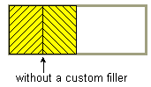 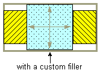
Two types of alignment problems sometimes occur withBoxLayout:
- A group of components all have the same alignment, but you want to change their alignment to make them look better. For example, instead of having the centers of a group of left-to-right buttons all in a line, you might want the bottoms of the buttons to be aligned. Here's an example:
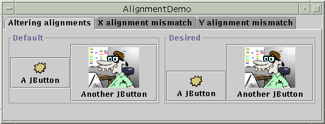
[PENDING: This figure will be updated.]
- Two or more components controlled by a
BoxLayouthave different default alignments, which causes them to be mis-aligned. For example, as the following shows, if a label and a panel are in a top-to-bottom box layout, the label's left edge is, by default, aligned with the center of the panel.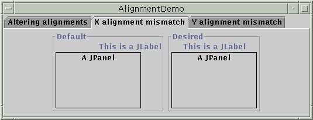
[PENDING: This figure will be updated.]In general, all the components controlled by a top-to-bottom
BoxLayoutobject should have the same X alignment. Similarly, all the components controlled by a left-to-rightBoxlayoutshould generally have the same Y alignment. You can set aJComponent's X alignment by invoking itssetAlignmentXmethod. An alternative available to all components is to override thegetAlignmentXmethod in a custom subclass of the component class. Similarly, you set the Y alignment of a component by invoking thesetAlignmentYmethod or by overridinggetAlignmentY.Here is an example, taken from an application called
BoxAlignmentDemo, of changing the Y alignments of two buttons so that the buttons' bottoms are aligned:By default, most components have center X and Y alignment. However, buttons, combo boxes, labels, and menu items have a different default X alignment value:button1.setAlignmentY(Component.BOTTOM_ALIGNMENT); button2.setAlignmentY(Component.BOTTOM_ALIGNMENT);LEFT_ALIGNMENT. The previous picture shows what happens if you put a left-aligned component such as a label together with a center-aligned component in a container controlled by a top-to-bottomBoxLayout.The
BoxAlignmentDemoprogram gives examples of fixing mismatched alignment problems. Usually, it's as simple as making an offending button or label be center aligned. For example:label.setAlignmentX(Component.CENTER_ALIGNMENT);
As we mentioned before,
BoxLayoutpays attention to a component's requested minimum, preferred, and maximum sizes. While you're fine tuning the layout, you might need to adjust these sizes.Sometimes the need to adjust the size is obvious. For example, a button's maximum size is generally the same as its preferred size. If you want the button to be drawn wider when additional space is available, then you need to change its maximum size.
Sometimes, however, the need to adjust size is not so obvious. You might be getting unexpected results with a box layout, and you might not know why. In this case, it's usually best to treat the problem as an alignment problem first. If adjusting the alignments doesn't help, then you might have a size problem. We'll discuss this further a bit later.
Note: AlthoughBoxLayoutpays attention to a component's maximum size, many layout managers do not. For example, if you put a button in the bottom part of aBorderLayout, the button will probably be wider than its preferred width, no matter what the button's maximum size is.BoxLayout, on the other hand, never makes a button wider than its maximum size.You can change the minimum, preferred, and maximum sizes in two ways:
- By invoking the appropriate
setXxxSizemethod (which is defined by theJComponentclass). For example:comp.setMinimumSize(new Dimension(50, 25)); comp.setPreferredSize(new Dimension(50, 25)); comp.setMaximumSize(new Dimension(Short.MAX_VALUE, Short.MAX_VALUE));- By overriding the appropriate
getXxxSizemethod. For example:...//in a subclass of a component class: public Dimension getMaximumSize() { size = getPreferredSize(); size.width = Short.MAX_VALUE; return size; }
If you're running into trouble with a box layout and you've ruled out alignment problems, then the trouble might well be size-related. For example, if the container controlled by the box layout is taking up too much space, then one or more of the components in the container probably needs to have its maximum size restricted.
You can use two techniques to track down size trouble in a box layout:
- Add a garish line border to the outside of the Swing components in question. This lets you see what size they really are. For example:
comp.setBorder(BorderFactory.createCompoundBorder( BorderFactory.createLineBorder(Color.red), comp.getBorder()));- Use good old
System.out.printlnto print the components' minimum, preferred, and maximum sizes, and perhaps their bounds.
[PENDING: We will make the left columns of the following tables have links to the API doc.]The following tables list the commonly used
BoxLayoutandBoxconstructors and methods. The API for using box layouts falls into these categories:
Creating BoxLayoutObjectsConstructor or Method Purpose BoxLayout(Container, int)Creates a BoxLayoutinstance that controls the specifiedContainer. The integer argument specifies the axis along which the container's components should be laid out. When the container has the default component orientation,BoxLayout.LINE_AXISspecifies that the components be laid out from left to right, andBoxLayout.PAGE_AXISspecifies that the components be laid out from top to bottom.Box(int)Creates a Box— a lightweight container that uses aBoxLayoutwith the specified axis. As of release 1.3,BoxextendsJComponent. Before that, it was implemented as a subclass ofContainer.static Box createHorizontalBox()
(inBox)Creates a Boxthat lays out its components from left to right.static Box createVerticalBox()
(inBox)Creates a Boxthat lays out its components from top to bottom.
Creating Space Fillers
These methods are defined in theBoxclass.Constructor or Method Purpose Component createRigidArea(Dimension)Create a rigid lightweight component. Component createHorizontalGlue()
Component createVerticalGlue()
Component createGlue()Create a glue lightweight component. Horizontal glue and vertical glue can be very useful. Component createHorizontalStrut()
Component createVerticalStrut()Create a "strut" lightweight component. We recommend using rigid areas instead of struts. Box.Filler(Dimension, Dimension, Dimension)Creates a lightweight component with the specified minimum, preferred, and maximum sizes (with the arguments specified in that order). See the custom Box.Fillerdiscussion, earlier in this section, for details.
Other Useful Methods Method Purpose void changeShape(Dimension, Dimension, Dimension)(inBox.Filler)Change the minimum, preferred, and maximum sizes of the recipient Box.Fillerobject. The layout changes accordingly.
The following table lists some of the many examples that use box layouts.
Example Where Described Notes BoxLayoutDemo2 This page Uses a box layout to create a centered column of components. BoxAlignmentDemo This page Demonstrates how to fix common alignment problems. BoxLayoutDemo This page Lets you play with alignments and maximum sizes. ListDialog This page A simple yet realistic example of using both a top-to-bottom box layout and a left-to-right one. Uses horizontal glue, rigid areas, and empty borders. Also sets the X alignment of a component. InternalFrameEventDemo How to Write an Internal Frame Listener Uses a top-to-bottom layout to center buttons and a scroll pane in an internal frame. MenuGlueDemo Customizing Menu Layout Shows how to right-align a menu in the menu bar, using a glue component. MenuLayoutDemo Customizing Menu Layout Shows how to customize menu layout by changing the menu bar to use a top-to-bottom box layout, and the popup menu to use a left-to-right box layout. ConversionPanel.javain the ConverterHow to Use Panels Aligns two components in different box-layout-controlled containers by setting the components' widths to be the same, and their containers' widths to be the same.
|
|
Start of Tutorial > Start of Trail > Start of Lesson |
Search
Feedback Form |
Copyright 1995-2004 Sun Microsystems, Inc. All rights reserved.